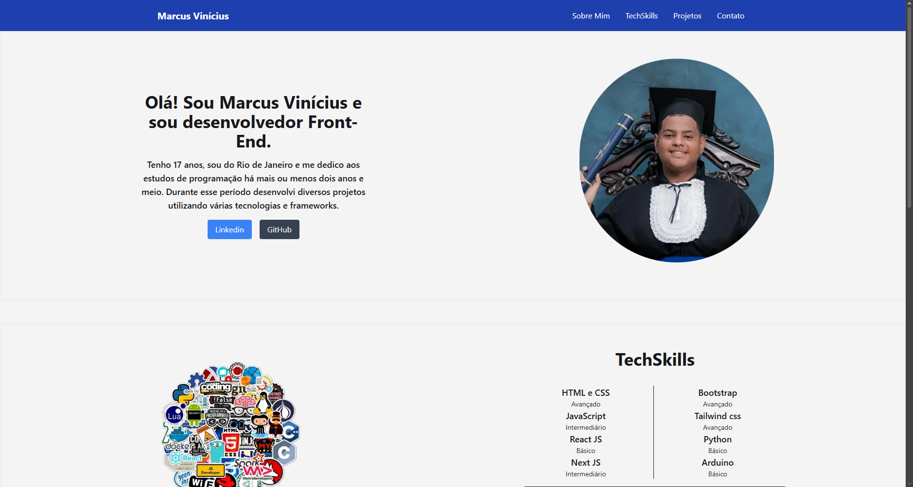
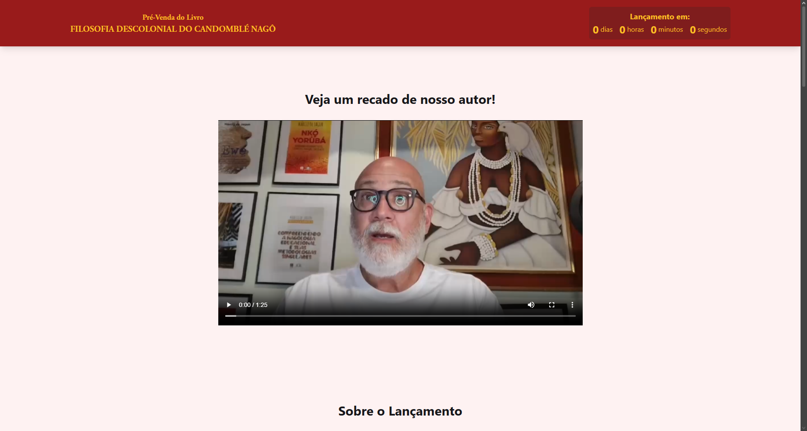
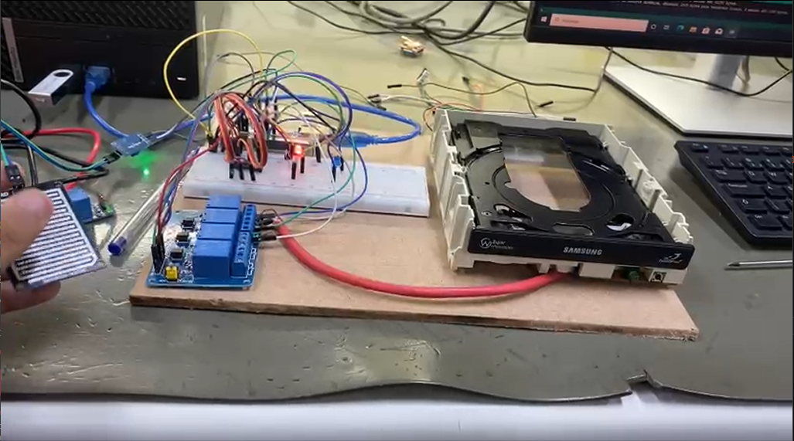
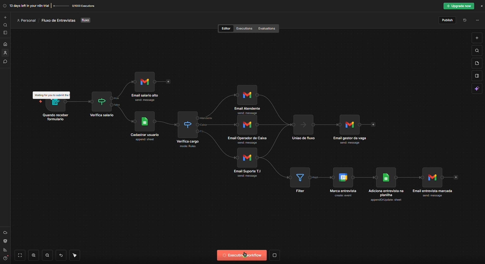

Este projeto foi desenvolvido com o objetivo de prática e aprimoramento das minhas habilidades em desenvolvimento web. A proposta foi criar um portfólio pessoal para treinar conceitos de HTML e CSS, além de me desafiar na organização de layout e estruturação de conteúdo. O projeto também serviu como base para evolução contínua e experimentação de novas técnicas de design e desenvolvimento.

Este projeto foi desenvolvido como freelancer para a Litteris Editora, com o objetivo de criar uma landing page voltada para o lançamento de um livro. A página foi projetada para divulgar a obra de forma atrativa, apresentando informações como sinopse, autor e chamadas para ação do lançamento. O foco principal foi criar uma interface visualmente agradável e eficiente para conversão, alinhada às necessidades do cliente.

Este projeto foi desenvolvido durante o ensino médio no curso de Automação Industrial, sendo o trabalho final da formação. A solução consiste em um sistema automatizado capaz de detectar chuva e acionar o fechamento de uma janela, utilizando sensores, arduíno e lógica de controle. O projeto integrou conceitos de eletrônica e automação, demonstrando a aplicação prática dos conhecimentos adquiridos ao longo do curso.

Este projeto foi desenvolvido como uma das minhas primeiras experiências utilizando a ferramenta n8n. O objetivo foi automatizar parte do processo de entrevistas, facilitando a organização e o gerenciamento das informações dos candidatos. A solução foi criada para otimizar tarefas repetitivas, melhorar a eficiência do processo e explorar o uso de automações no fluxo de trabalho.